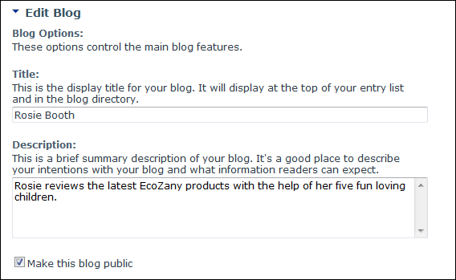
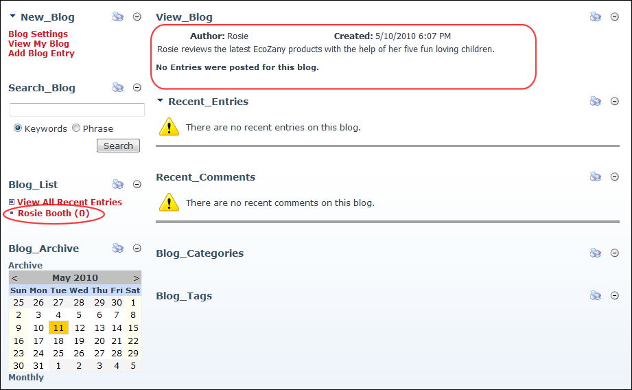

Creating a Parent Blog - Create My Blog
How to create your first blog using the New_Blog module. This blog will be a parent blog under which you can create multiple child blogs. Each of your blogs can be set as either public (can be viewed by others) or private (only you can view private blogs).
Note: Only authorized users can create blogs. See "Enabling Users to Create Blogs"
- Click the Create My Blog link on the New_Blog module - OR - Select Create Blog from the Blog_List module actions menu. This opens the Create New Blog page.
- In the Blog Options section, complete these settings:
- In the Title text box, enter a title for the blog. This title is displayed in the Blog_List module.
- In the Description text box, enter a description of the content of your blog.
- Optional. At Make This Blog Public, select from these options:
- Mark
 the check box to make this blog viewable to all users who are authorized to view this module.
the check box to make this blog viewable to all users who are authorized to view this module. - Unmark
 the check box to set this blog as private. Private blogs can only be viewed by the blog owner. I.e. They cannot be viewed by any other user including Page Editors and Administrators.
the check box to set this blog as private. Private blogs can only be viewed by the blog owner. I.e. They cannot be viewed by any other user including Page Editors and Administrators.

-
Click the Update button. The blog name is now listed in the Blog_List module and the blog is displayed in the View Blog module. You can now add your first blog entry.

The newly created blog
-
See "Adding a Basic Blog Entry"
-
See "Creating a Child Blog"